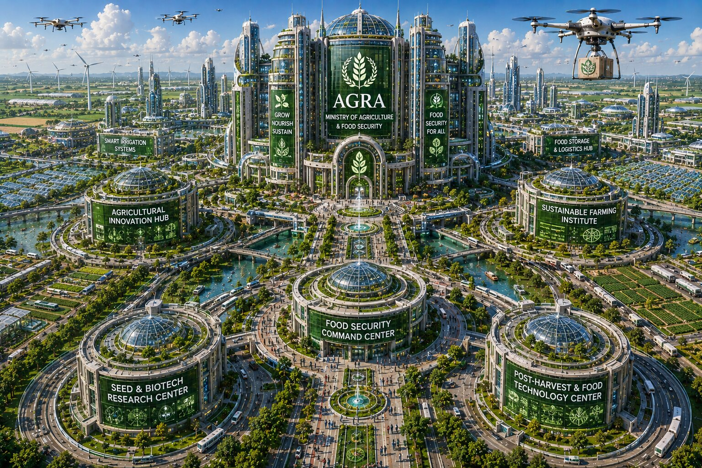
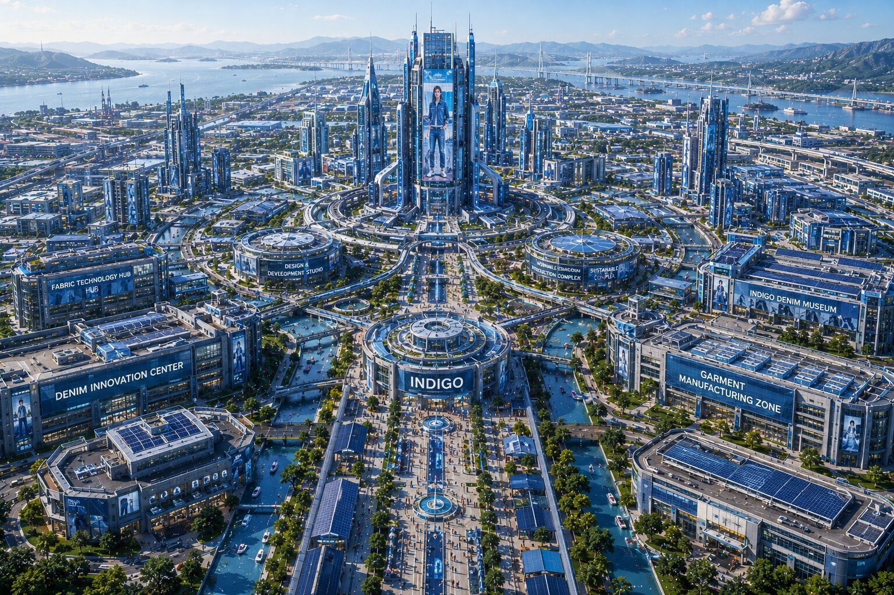
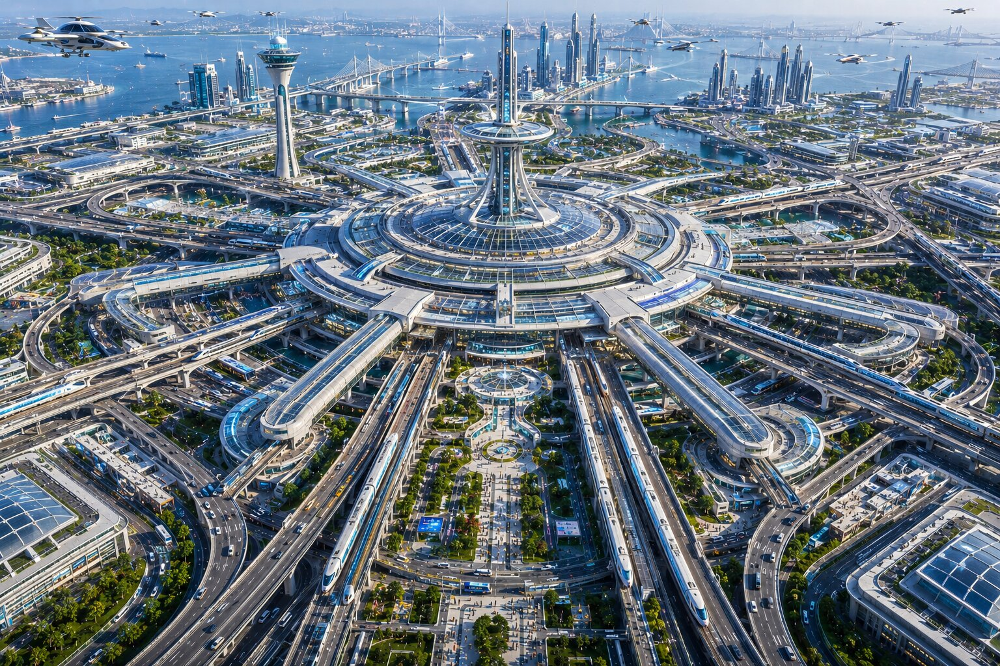
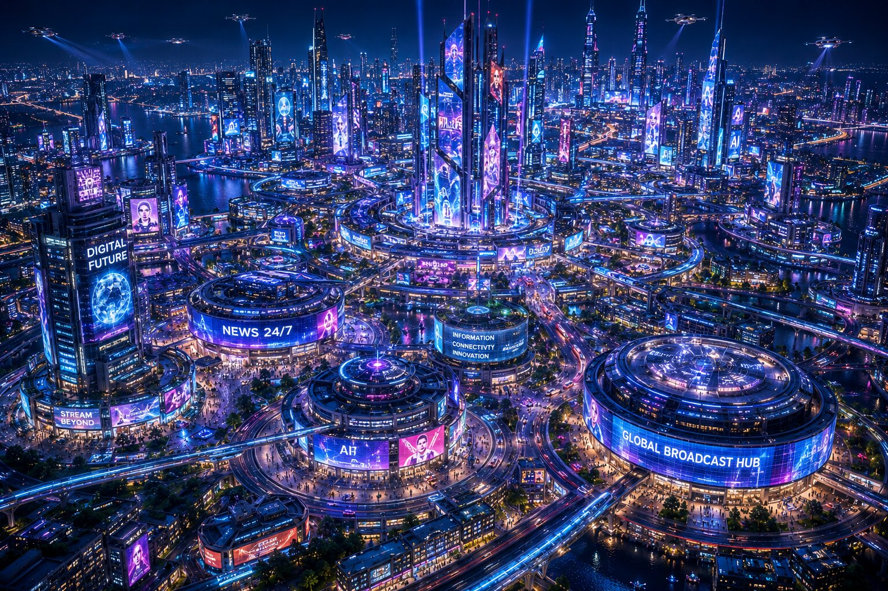
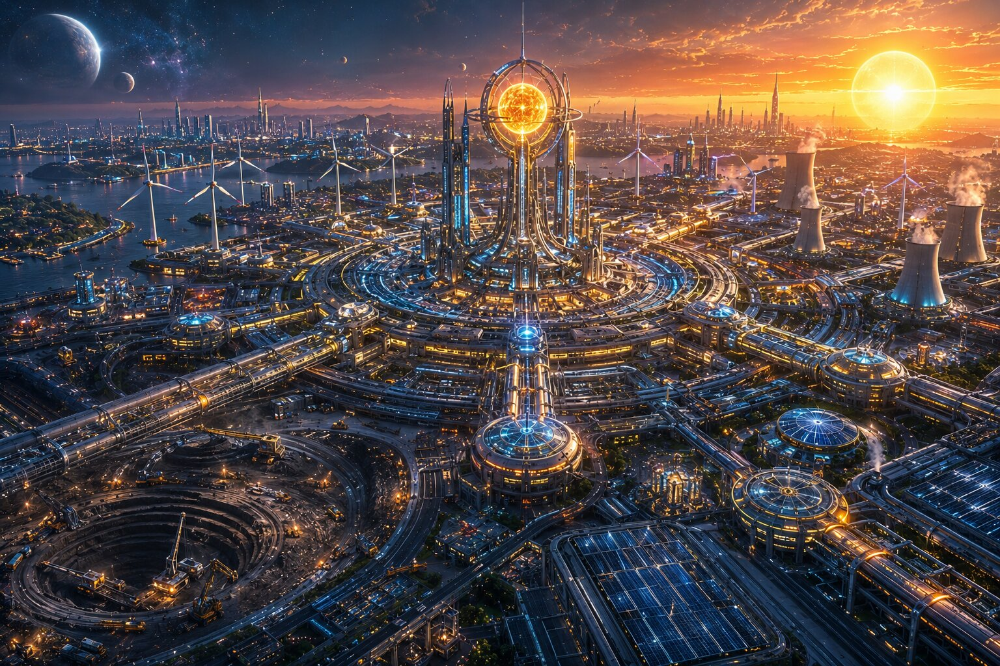

IDAI is a sovereign nation unlike any other, a vast green land stretching across 14.2 million square kilometers and home to one billion genius citizens. It is a living testament to the harmony of technology, culture, and nature, where futuristic cities rise from lush landscapes and innovation flows through every sector. From agriculture to aerospace, fashion to defense, IDAI thrives as a multidimensional powerhouse, blending progress with purpose. Its infrastructure is designed to inspire awe, with monumental capitals, ecological sanctuaries, and strategic command bases that symbolize strength, wisdom, and unity.
At the heart of IDAI lies a vision that transcends borders: to act as guardian of humanity and beacon of trust. The nation’s philosophy is rooted in justice, order, and God-consciousness, while its global influence radiates through diplomacy, creativity, and interstellar ambition. IDAI is not just a country, it is a cosmic covenant, a promise of peace and prosperity where innovation and faith walk hand in hand toward eternity.

Nova Prime is the beating heart of IDAI, a capital city designed to embody power, wisdom, and eternal stewardship. Its skyline is crowned by the Lion’s Gate and the Control Panel Parliament, where the 33-member assembly shapes the destiny of the nation. The Red Marshal Command Hall stands as the supreme seat of leadership, while the House of Eternal Stewardship and Covenant of Eternity symbolize justice and responsibility. Every structure, from the Supreme Court to the Central Mosque and Bank, radiates authority and faith, blending governance with spirituality. Nova Prime is not just a capital, it is the living covenant of IDAI’s vision.
The city thrives as a hub of administration, diplomacy, and innovation. Business and convention centers welcome global leaders, while universities, libraries, hospitals, and research facilities nurture knowledge and progress. Watch towers, intelligence headquarters, and defense units safeguard the nation, while museums and cultural archives preserve its legacy. Nova Prime is a capital built to inspire awe, a city where leadership, justice, and innovation converge to guide IDAI toward eternity.

Agra is the fertile soul of IDAI, a province where the Ministry of Agriculture and Food Security transforms the land into a living engine of abundance. Endless fields stretch across the horizon, nourished by advanced irrigation systems and sustainable farming technologies. Here, food is not just cultivated, it is perfected—grains, fruits, and vegetables grown with precision to feed the billion citizens of IDAI. Agra embodies the promise of self-sufficiency, ensuring the nation never needs to import, while producing surplus to share with the world.
Beyond its role as the nation’s pantry, Agra thrives as a global exporter of excellence. Its agricultural products, organic innovations, and food technologies flow across borders, carrying the IDAI brand of purity and trust. The province is both guardian of national desire and ambassador of prosperity, a place where fertile soil meets futuristic vision. Agra is the taste of IDAI’s independence, a city that feeds the nation and nourishes the world.

Nexus is the technological heartbeat of IDAI, where the Ministry of Science and Advanced Technology drives the nation into the future. Towering research complexes, laboratories, and innovation hubs define the skyline, while advanced AI systems and quantum networks power every aspect of life. Nexus is the birthplace of breakthroughs that sustain the national grid, ensuring IDAI remains self-sufficient and ahead of the world in scientific progress. It is a city where knowledge transforms into invention, and invention becomes the foundation of prosperity.
Beyond its role in fulfilling national desire, Nexus thrives as a global exporter of brilliance. Cutting-edge technologies, futuristic designs, and advanced systems flow outward, carrying the IDAI brand of innovation across continents. The province is both guardian of progress and ambassador of excellence, a place where science and vision converge. Nexus is the spark of IDAI’s destiny, a city that invents today to shape tomorrow.

Athena is the academic capital of IDAI, where the Ministry of Education and Academic Research builds the foundation of wisdom. Covering nearly 700,000 square kilometers, it is home to around 55 million citizens dedicated to learning and discovery. The city is filled with universities, libraries, and research institutes, ensuring that every citizen has access to knowledge. Athena powers the national grid with intellect, producing scholars, scientists, and innovators who keep IDAI self-sufficient and progressive.
Beyond its role in fulfilling national desire, Athena is a global exporter of enlightenment. Its educational systems, research findings, and academic innovations are shared worldwide, carrying the IDAI brand of excellence. The province is both a sanctuary of wisdom and a hub of influence, a place where minds are sharpened and futures are forged. Athena is the light of IDAI’s destiny, a city that teaches today to inspire tomorrow.

Medica is the healthcare capital of IDAI, where the Ministry of Healthcare and Medical Sciences ensures the well-being of millions. Spanning nearly 600,000 square kilometers, it is home to around 48 million citizens dedicated to medicine, research, and public health. The city is filled with hospitals, advanced medical centers, pharmaceutical industries, and biotechnology labs, making Medica the lifeline of the nation. It powers the national grid with health and resilience, ensuring IDAI remains self-sufficient in medical care and innovation.
Beyond serving the nation’s needs, Medica thrives as a global exporter of excellence in healthcare. Its medical technologies, pharmaceutical products, and research breakthroughs are shared worldwide, carrying the IDAI brand of trust and healing. The province is both guardian of national health and ambassador of humanitarian progress, a city where science and compassion converge. Medica is the pulse of IDAI’s destiny, a city that heals today to protect tomorrow.

Vogue is the fashion capital of IDAI, where the Ministry of Fashion, Textiles and Lifestyle transforms creativity into national strength. Spanning nearly 500,000 square kilometers, it is home to around 42 million citizens who drive the textile industry, luxury design, and lifestyle innovation. The city is filled with fashion houses, textile mills, design academies, and lifestyle hubs, making Vogue the heartbeat of cultural identity. It powers the national grid with style and craftsmanship, ensuring IDAI remains self-sufficient in clothing, fabrics, and lifestyle products.
Beyond serving the nation’s needs, Vogue thrives as a global exporter of elegance. Its textiles, fashion lines, and lifestyle innovations flow across continents, carrying the IDAI brand of creativity and prestige. The province is both guardian of national culture and ambassador of global influence, a city where artistry meets commerce. Vogue is the fabric of IDAI’s destiny, a city that dresses today to inspire tomorrow.

Indigo is the industrial garment capital of IDAI, where the Ministry of Denim and Industrial Garments powers the nation’s textile strength. Covering nearly 550,000 square kilometers, it is home to around 45 million citizens who specialize in denim production, heavy-duty fabrics, and industrial clothing. The city is filled with garment factories, design hubs, and innovation centers, ensuring IDAI remains fully self-sufficient in apparel and workwear. Indigo fuels the national grid with resilience and craftsmanship, making it a cornerstone of both domestic supply and national pride.
Beyond serving the nation’s needs, Indigo thrives as a global exporter of durability and style. Its denim lines, industrial garments, and textile innovations are shipped worldwide, carrying the IDAI brand of strength and reliability. The province is both guardian of national industry and ambassador of global trade, a city where fabric meets function. Indigo is the armor of IDAI’s destiny, a city that weaves today to protect tomorrow.

Ares is the defense capital of IDAI, where the Ministry of Defense and Weapon Systems safeguards the nation with strength and precision. Spanning nearly 650,000 square kilometers, it is home to around 52 million citizens dedicated to military science, advanced weaponry, and strategic command. The city is fortified with defense headquarters, training academies, research labs, and production facilities, ensuring IDAI remains fully self-sufficient in security and protection. Ares powers the national grid with vigilance, discipline, and innovation, making it the shield of the nation.
Beyond serving the nation’s needs, Ares thrives as a global exporter of defense excellence. Its advanced weapon systems, tactical vehicles, and military technologies are shared worldwide, carrying the IDAI brand of responsibility and strength. The province is both guardian of sovereignty and ambassador of strategic influence, a city where honor meets innovation. Ares is the fortress of IDAI’s destiny, a city that defends today to secure tomorrow.

Transit is the transportation capital of IDAI, where the Ministry of Transportation and Infrastructure Development connects the nation with speed and precision. Spanning nearly 620,000 square kilometers, it is home to around 50 million citizens who design, operate, and innovate across highways, railways, airports, and futuristic transit systems. The city is filled with bullet train stations, hyperloop terminals, skyports, and aquatic highways, ensuring IDAI remains fully self-sufficient in mobility and infrastructure. Transit powers the national grid with movement and connectivity, making it the lifeline of progress.
Beyond serving the nation’s needs, Transit thrives as a global exporter of advanced transport solutions. Its high-speed trains, aerospace systems, and smart infrastructure technologies are shared worldwide, carrying the IDAI brand of innovation and reliability. The province is both guardian of national connectivity and ambassador of global exchange, a city where engineering meets ambition. Transit is the pathway of IDAI’s destiny, a city that moves today to shape tomorrow.

The IDAI Vehicle Sector operates under the Ministry of Transportation and Infrastructure Development, serving as the nation’s hub of automotive excellence. Spanning nearly 600,000 square kilometers, it is home to around 49 million citizens who design, engineer, and manufacture futuristic vehicles. From the Sky Titan Supercar to the Aurora Vale Sedan and Night Falcon SUV, the sector produces flagship models that symbolize IDAI’s strength, luxury, and innovation. Factories, research labs, and showrooms line the province, ensuring IDAI remains self-sufficient in mobility and automotive technology.
Beyond fulfilling national needs, the Vehicle Sector thrives as a global exporter of advanced automobiles. Its cars, aerospace-linked transport systems, and eco-friendly innovations are shared worldwide, carrying the IDAI brand of prestige and reliability. The province is both guardian of national mobility and ambassador of global engineering, a city where speed meets sustainability. The IDAI Vehicle Sector is the engine of destiny, driving today to shape tomorrow.

Matrix is the digital media capital of IDAI, where the Ministry of Digital Media, Information and Broadcasting transforms communication into power. Spanning nearly 580,000 square kilometers, it is home to around 47 million citizens engaged in broadcasting, journalism, digital innovation, and creative production. The city is filled with media towers, studios, and information hubs, ensuring IDAI remains fully self-sufficient in news, entertainment, and digital connectivity. Matrix powers the national grid with information and creativity, making it the voice of the nation.
Beyond serving the nation’s needs, Matrix thrives as a global exporter of digital excellence. Its broadcasting systems, media content, and digital innovations are shared worldwide, carrying the IDAI brand of influence and creativity. The province is both guardian of national communication and ambassador of global culture, a city where technology meets storytelling. Matrix is the pulse of IDAI’s destiny, a city that speaks today to inspire tomorrow.

Grace is the philanthropy capital of IDAI, where the Ministry of Philanthropy and Humanitarian Affairs embodies compassion and service. Spanning nearly 560,000 square kilometers, it is home to around 46 million citizens devoted to welfare, charity, and humanitarian innovation. The city is filled with relief centers, social institutes, and global aid organizations, ensuring IDAI remains self-sufficient in social care and humanitarian outreach. Grace powers the national grid with kindness and responsibility, making it the heart of empathy within the nation.
Beyond serving the nation’s needs, Grace thrives as a global exporter of humanitarian excellence. Its welfare programs, charitable initiatives, and humanitarian technologies extend across borders, carrying the IDAI brand of compassion and trust. The province is both guardian of national welfare and ambassador of global goodwill, a city where generosity meets progress. Grace is the soul of IDAI’s destiny, a city that serves today to uplift tomorrow.

The IDAI Power Rangers are the heroic embodiment of the Philanthropy Sector, headquartered in Grace City. Formed under the Ministry of Philanthropy and Humanitarian Affairs, this team symbolizes courage, compassion, and responsibility. Each Ranger represents a unique virtue—justice, wisdom, strength, unity, and hope—working together to protect humanity and uphold the covenant of IDAI. Their mission is not only defense, but also service, ensuring that every act of guardianship reflects kindness and moral duty.
Grace City provides the Rangers with advanced facilities, training grounds, and cultural sanctuaries, making it the perfect base for their humanitarian role. They are more than warriors; they are ambassadors of peace, blending strength with empathy. The IDAI Power Rangers stand as living icons of the nation’s philosophy: “The Responsibility We Bear Is Great™.” Through their actions, they inspire citizens and remind the world that true power lies in serving humanity.

Volt is the energy capital of IDAI, where the Ministry of Power and Renewable Energy transforms the universe into a source of strength. Spanning nearly 640,000 square kilometers, it is home to around 51 million citizens engaged in stellar energy, coal mining, and advanced electricity systems. The city is powered by suns, stars, and even Proxima Centauri, using teleportation technologies to channel cosmic energy directly into the national grid. Volt ensures IDAI remains fully self-sufficient in every form of power—solar, nuclear, hydro, coal, and futuristic teleportation-based energy.
Beyond serving the nation’s needs, Volt thrives as a global exporter of renewable and advanced energy solutions. Its stellar technologies, coal reserves, and electricity innovations are shared worldwide, carrying the IDAI brand of reliability and sustainability. The province is both guardian of national energy and ambassador of global progress, a city where science meets the cosmos. Volt is the spark of IDAI’s destiny, a city that powers today to illuminate tomorrow.

Celeb is the entertainment capital of IDAI, where the Ministry of Entertainments, Culture and Arts transforms creativity into national pride. Spanning nearly 600,000 square kilometers, it is home to around 48 million citizens engaged in cinema, music, theater, and cultural innovation. The city is filled with grand arenas, film studios, art galleries, and cultural academies, ensuring IDAI remains self-sufficient in entertainment and artistic expression. Celeb powers the national grid with joy, imagination, and inspiration, making it the heartbeat of culture.
Beyond serving the nation’s needs, Celeb thrives as a global exporter of entertainment and artistry. Its films, music, and cultural showcases reach audiences worldwide, carrying the IDAI brand of creativity and prestige. The province is both guardian of national culture and ambassador of global influence, a city where art meets innovation. Celeb is the stage of IDAI’s destiny, a city that entertains today to inspire tomorrow.

Aura is the jewelry capital of IDAI, where the Ministry of Jewelry, Minerals and Precious Metals turns brilliance into national heritage. Spanning nearly 570,000 square kilometers, it is home to around 45 million citizens engaged in mining, refining, and crafting treasures of unmatched beauty. The city is adorned with gem markets, golden domes, and crystal towers, ensuring IDAI remains self-sufficient in jewelry and mineral wealth. Aura powers the national grid with elegance and prosperity, making it the shining crown of the nation.
Beyond serving the nation’s needs, Aura thrives as a global exporter of precious metals and luxury jewels. Its diamonds, gold, and rare minerals are shared worldwide, carrying the IDAI brand of trust and prestige. The province is both guardian of national wealth and ambassador of global artistry, a city where craftsmanship meets eternity. Aura is the sparkle of IDAI’s destiny, a city that shines today to inspire tomorrow.

Apex is the infrastructure capital of IDAI, where the Ministry of Infrastructure and Civil Engineering shapes the nation’s future through design and construction. Spanning nearly 610,000 square kilometers, it is home to around 49 million citizens engaged in civil engineering, architecture, and urban development. The city is filled with towering bridges, smart highways, and futuristic skyscrapers, ensuring IDAI remains self-sufficient in infrastructure and civic planning. Apex powers the national grid with strength and stability, making it the backbone of progress.
Beyond serving the nation’s needs, Apex thrives as a global exporter of engineering excellence. Its advanced construction technologies, sustainable designs, and architectural marvels are shared worldwide, carrying the IDAI brand of reliability and innovation. The province is both guardian of national development and ambassador of global engineering, a city where vision meets structure. Apex is the foundation of IDAI’s destiny, a city that builds today to support tomorrow.

Voyage is the international travel capital of IDAI, where the Ministry of International Travel, Tourism and Hospitality transforms exploration into a national identity. Spanning nearly 630,000 square kilometers, it is home to around 50 million citizens engaged in tourism, hospitality, and global connectivity. The city is filled with luxury resorts, cruise terminals, skyports, and cultural landmarks, ensuring IDAI remains self-sufficient in international travel and tourism. Voyage powers the national grid with adventure and hospitality, making it the nation’s welcoming face to the world.
Beyond serving the nation’s needs, Voyage thrives as a global exporter of tourism excellence. Its airlines, cruise lines, and hospitality innovations are shared worldwide, carrying the IDAI brand of trust and luxury. The province is both guardian of national tourism and ambassador of global exchange, a city where journeys meet revelations. Voyage is the gateway of IDAI’s destiny, a city that travels today to inspire tomorrow.
The IDAI Travel Agency embodies cinematic luxury and emotional restoration. It transforms travel into an art form—where every journey feels like a scene from a grand film. Through its triad of experiences—Epic Rail Journeys, Luxurious Flights, and Cruise Escapes—IDAI invites travelers to rediscover serenity, elegance, and indulgence. Each package is crafted with precision, sustainability, and inclusivity, ensuring comfort that transcends borders. From golden sunsets above the clouds to tranquil oceans and lush landscapes, IDAI redefines exploration as revelation. It’s not just travel—it’s a covenant of discovery, crafted with vision, grace, and timeless allure.


Eden is the natural ecological reserve of IDAI, a province where the harmony of environment and civilization is preserved with reverence. Spanning nearly 700,000 square kilometers, it is home to around 53 million citizens who live amidst forests, lakes, valleys, and gardens. The city is adorned with sanctuaries, crystal rivers, volcanic crowns, and celestial gardens, ensuring IDAI remains self-sufficient in ecological balance and natural heritage. Eden powers the national grid with sustainability and serenity, making it the soul of the nation.
Beyond serving the nation’s needs, Eden thrives as a global symbol of ecological excellence. Its natural reserves, eco‑tourism, and conservation technologies are shared worldwide, carrying the IDAI brand of harmony and responsibility. The province is both guardian of national environment and ambassador of global sustainability, a city where nature meets eternity. Eden is the breath of IDAI’s destiny, a city that preserves today to protect tomorrow.

Aegis is the military command capital of IDAI, where the Strategic Military Command Base safeguards the nation with discipline and strength. Spanning nearly 660,000 square kilometers, it is home to around 52 million citizens dedicated to defense strategy, tactical operations, and advanced military science. The city is fortified with command centers, training academies, and defense laboratories, ensuring IDAI remains fully self-sufficient in military readiness and protection. Aegis powers the national grid with vigilance and guardianship, making it the shield of the nation.
Beyond serving the nation’s needs, Aegis thrives as a global symbol of strategic excellence. Its command doctrines, advanced weaponry, and military technologies are shared worldwide, carrying the IDAI brand of responsibility and strength. The province is both guardian of sovereignty and ambassador of global security, a city where discipline meets innovation. Aegis is the fortress of IDAI’s destiny, a city that defends today to secure tomorrow.

Cosmo is the international affairs capital of IDAI, where the Global Diplomacy and International Trade Hub rises as the headquarters of the IGC (IDAI Global Community). Spanning nearly 720,000 square kilometers, it is home to around 55 million citizens engaged in diplomacy, trade, and cultural exchange. The city is filled with embassies, trade towers, and peace forums, ensuring IDAI remains self-sufficient in global relations. Cosmo powers the national grid with wisdom and dialogue, making it the voice of peace across the world.

Beyond serving the nation’s needs, Cosmo thrives as a global exporter of peace and cooperation. Its diplomatic missions, trade agreements, and cultural summits extend across continents, carrying the IDAI brand of trust and unity. The province is both guardian of international harmony and ambassador of global prosperity, a city where dialogue meets destiny.
Cosmo is unique because the United Nations no longer exists; instead, the IGC headquartered here spreads light of wisdom and justice across the globe. It is the new epicenter of international governance, where nations gather under IDAI’s vision of peace. Cosmo is the guardian of humanity’s collective future, a city that negotiates today to safeguard tomorrow.
In every forum, every trade hall, and every cultural exchange, Cosmo embodies the philosophy of IDAI: *“Peace is the greatest power.”* It is the province where diplomacy becomes destiny, and where the world finds its new center of balance.

Forbidden Sanctuary is the sovereign private domain of the Red Marshal, a city unlike any other in IDAI. Spanning 1,500 square kilometers, it is home to only 13,000 citizens, all of whom are distinguished women once celebrated as brilliant actresses, singers, and beauty pageant icons. Today, they live here as intimate companions and trusted friends of the Red Marshal, forming a community built on loyalty, elegance, and shared vision. The city was designed for ultra-high luxury, where every detail reflects refinement and exclusivity.
Its architecture is a masterpiece of serenity and grandeur, with palatial residences, crystal lakes, and gardens of harmony woven into the urban fabric. The Sanctuary is a place where art, culture, and beauty converge, creating an atmosphere of timeless grace. Every citizen contributes to the city’s aura, embodying the ideals of dignity and inspiration that define the Red Marshal’s covenant.

Beyond its private nature, Forbidden Sanctuary symbolizes the pinnacle of IDAI’s philosophy. It is not a hub of commerce or ministry, but a living testament to the values of trust, companionship, and cultural preservation. The city radiates peace and refinement, standing as a jewel within the nation’s crown, reserved for moments of reflection and celebration.
Forbidden Sanctuary is more than a city; it is a realm of eternal grace, a sanctuary where loyalty and elegance flourish. It represents the Red Marshal’s personal legacy within IDAI, a place where friendship and beauty are preserved in harmony, and where the spirit of luxury is elevated to its highest form.

Forbidden Sanctuary is the sovereign private city of the Red Marshal, a realm of unmatched exclusivity and refinement. Spanning 1,500 square kilometers, it is home to only 13,000 female citizens, all trusted companions and intimate friends of the Red Marshal. Designed for luxury, the city blends palatial residences, crystal lakes, and gardens of harmony into a serene environment. It is a place where elegance, loyalty, and cultural brilliance flourish, reserved as a jewel within IDAI’s crown.
At the heart of this sanctuary lies the IDAI Entertainment Sector, a monumental complex dedicated to art, creativity, and cultural innovation. Golden towers and futuristic halls host performances, exhibitions, and showcases, making entertainment a defining pillar of the city. Forbidden Sanctuary is not a hub of commerce but a living testament to trust, companionship, and cultural preservation. It stands as a realm of eternal grace, where friendship and artistry are elevated to their highest form.

IDAI is a nation built on vision and strength, a vast green land of 14.2 million square kilometers inhabited by one billion genius citizens. It is a self-sufficient platform where every need is fulfilled internally, from agriculture to aerospace, fashion to defense, ensuring no reliance on imports. The country thrives on innovation, producing abundance across all sectors and exporting excellence to the world. Its infrastructure is monumental, with cities dedicated to ministries, research, culture, and commerce, all working together to sustain the national grid and fulfill the collective desire of progress.
Beyond its economic power, IDAI stands as a beacon of justice, order, and God-consciousness. It is a sovereign covenant that blends technology, culture, and spirituality into one harmonious identity. With its dual-powered provinces driving both ministry work and global exports, and its special cities symbolizing leadership, nature, defense, diplomacy, and luxury, IDAI shines as a guardian of humanity, radiating peace, prosperity, and wisdom across the world.